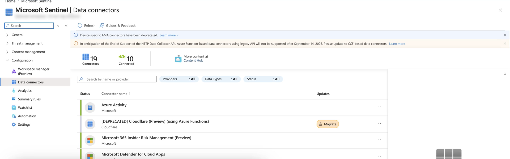

AZ-500 / SC-100 · Foundations
Microsoft Cybersecurity
Reference Architectures
The reference picture — how Microsoft's security capabilities fit together across the whole estate, drawn against Zero Trust.
THE PICTURE → MAP YOUR ESTATE → SEQUENCE THE GAPS
What MCRA isNETWORK INTELLIGENCE · FOUNDATIONS
A set of reference architectures, not a product
The target-state picture of the whole estate
MCRA is a set of end-to-end technical reference architectures showing how to secure the "hybrid of everything" — legacy IT, multicloud, IoT/OT, and AI — using Zero Trust.
DELIVERED AS A POWERPOINT DECK
WITH SPEAKER NOTES
BUILT ON ZERO TRUST
A COMPONENT OF THE SAF
Not a product, portal blade, or benchmark. It is the architecture diagrams — the picture, not the checklist.
What the deck containsNETWORK INTELLIGENCE · FOUNDATIONS
More than diagrams
Diagrams, plus the reasoning around them
- Antipatterns & best practices — common mistakes, and what good looks like.
- Threat trends & attack patterns — the case for end-to-end security and ruthless prioritization.
- End-to-end Zero Trust guidance — how to adopt the approach across the estate.
- Mappings — Microsoft capabilities to Zero Trust standards and to organizational roles.
The architecture mapNETWORK INTELLIGENCE · FOUNDATIONS
The eight diagram families
One picture per capability domain
ID
Capabilities & Identity
The master cybersecurity capabilities map, plus Zero Trust user access — identity, device, adaptive access.
·
OP
SecOps & OT
Security operations — XDR plus SIEM — and operational technology alongside IT.
·
IN
Infra, Multicloud & Org
Infrastructure & dev security, multicloud, attack-chain coverage, and security org functions.
portal.azure.com — Microsoft Sentinel · Data connectors

Grounded · AZ-500 · Microsoft Sentinel
SecOps is one capability area
The Security operations family covers XDR and SIEM — detection, investigation, response. Microsoft Sentinel is the SIEM/SOAR capability that family points to.
How an architect uses itNETWORK INTELLIGENCE · FOUNDATIONS
Gap-map your estate against the picture
A target-state template you overlay onto your estate
Grounded · AZ-500 · Defender for Cloud
Own, partially own, or lack
Open the capabilities slide, overlay your current controls, mark what you own / partially own / lack, then sequence the gaps by risk.
It serves as a starting template, a comparison reference against what you already license, and a learning tool — each capability carries a ScreenTip.
portal.azure.com — Microsoft Defender for Cloud

Where MCRA sitsNETWORK INTELLIGENCE · FOUNDATIONS
The framework connective tissue
Strategy → picture → checklist → lenses
- ZT · Zero Trust is the strategy — verify explicitly, least privilege, assume breach.
- MCRA · MCRA is the picture — Zero Trust drawn across the whole estate.
- MCSB · MCSB is the checklist — prescriptive controls you measure in Defender for Cloud.
- WAF · WAF is the workload lens; CAF is the cloud-adoption journey.
SC-100 Domain 1 pairs them: MCRA is the architecture, MCSB is the control benchmark. Design against both.
RememberNETWORK INTELLIGENCE · FOUNDATIONS
MCRA in five rules
The reference picture, in five lines
- 1 · MCRA is reference architectures for the "hybrid of everything" estate — a deck, not a product.
- 2 · It is built on Zero Trust and is a component of the Security Adoption Framework.
- 3 · Eight diagram families — capabilities, ZT user access, SecOps, OT, multicloud, attack chain, infra/dev, org functions.
- 4 · Use it as a target-state template — map your estate, mark gaps, sequence by risk.
- 5 · MCRA is the picture; MCSB is the checklist — Domain 1 tests them as a pair.
Hands-on · 1 of 2NETWORK INTELLIGENCE · FOUNDATIONS
Do this
Map your controls onto the capabilities slide
GOAL · Produce a one-slide capability heat-map of your tenant
- Download the current MCRA PowerPoint and open the Microsoft cybersecurity capabilities diagram.
- For each capability, mark it own / partially deployed / gap against your tenant.
- The result is a one-slide capability heat-map — a strong SC-100 design artifact.
✓ DONE WHEN · Every capability on the slide carries an own / partial / gap mark
Hands-on · 2 of 2NETWORK INTELLIGENCE · FOUNDATIONS
Do this
Walk one family, then pair gaps to MCSB
GOAL · Practice the MCRA-plus-MCSB reasoning Domain 1 tests
- Pick Zero Trust user access (or SecOps). In presentation mode, read each capability's ScreenTip.
- For each, write the Microsoft capability, the control you use today, and the integration point you don't yet use.
- Take three gaps from Exercise 1 and name the MCSB control domain that would govern each.
✓ DONE WHEN · Three gaps are each mapped to an MCSB control domain